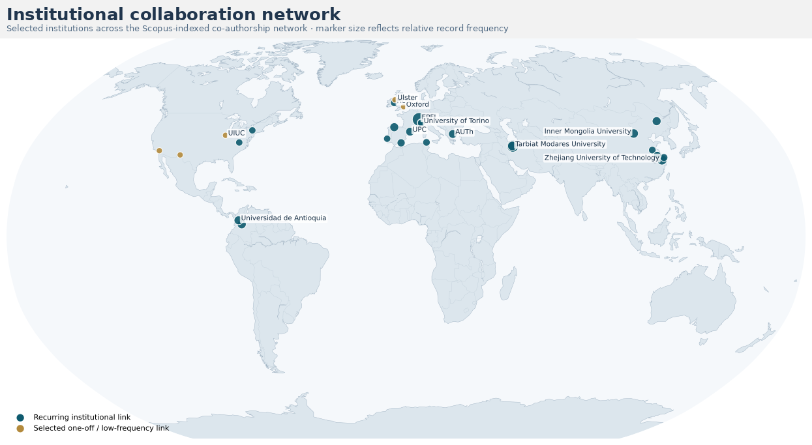
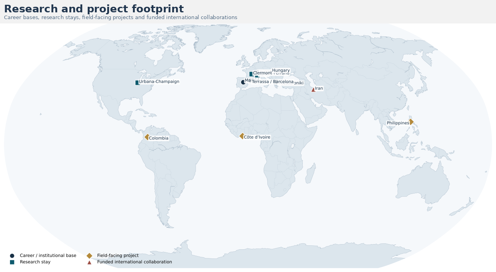
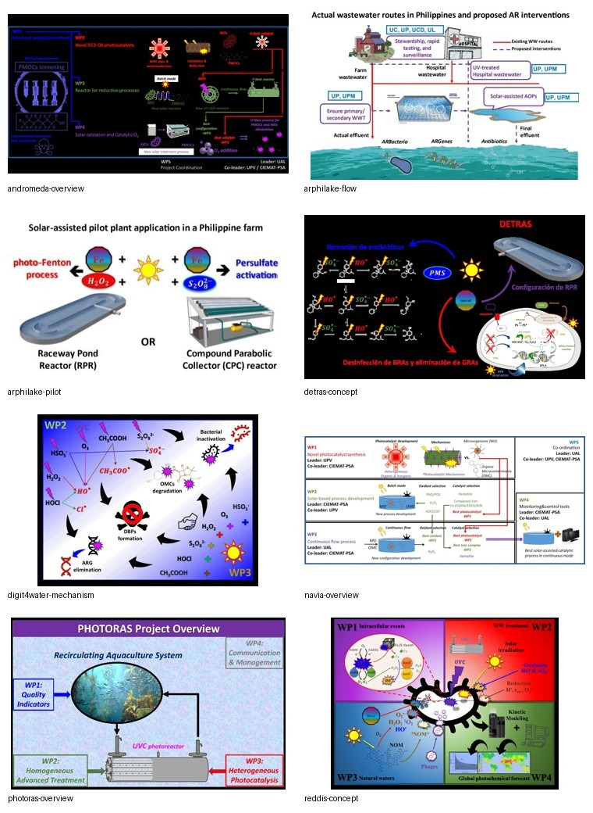

01
Environmental AMR & microbial fate
ARB/ARGs, microbial stress, biofilms, regrowth and the distinction between a molecular signal and biologically relevant environmental risk.
Mechanism → application
I study how chemical, photochemical and microbiological mechanisms shape contaminants, pathogens and antimicrobial resistance in water systems — and translate that understanding into experimentally validated treatment, monitoring and risk-reduction strategies.
Scientific identity
This framework connects treatment mechanism with biological response, environmental fate and practical implementation.
Research
01
ARB/ARGs, microbial stress, biofilms, regrowth and the distinction between a molecular signal and biologically relevant environmental risk.
02
Solar/UV treatment, photo-Fenton, persulfate/peroxymonosulfate, reactive intermediates, kinetics and matrix effects.
03
Chemical, microbial and operational validation of treatment configurations under realistic water and wastewater conditions.
Global scientific footprint
The first map summarizes the co-authorship network. The second highlights research bases, stays and project-linked international activity.

Marker size reflects the relative weight of recurring collaboration links.

Markers summarize research and project links at city or country level.
Research in motion
Examples from funded projects across environmental AMR, water treatment, photochemistry and process validation.

Selected funded research
One Health environmental AMR project focused on upstream interventions and environmental burden in Philippine lakes.
Mechanistic bacterial susceptibility and reductive/oxidative disinfection in wastewater and natural waters.
International point-of-use water-treatment project with major responsibility for disinfection and treatment enhancement.
For coordinators